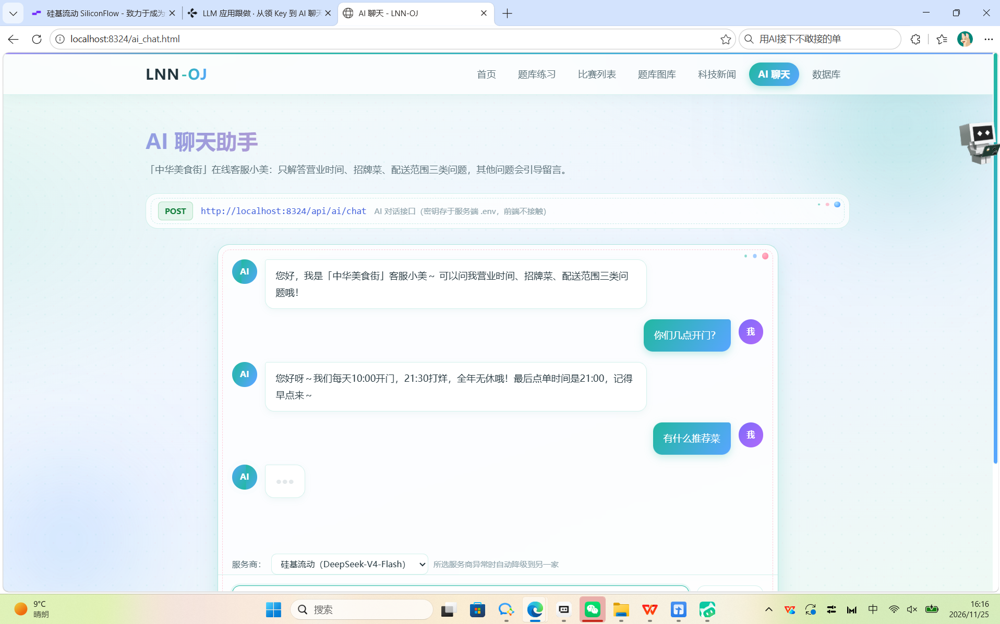
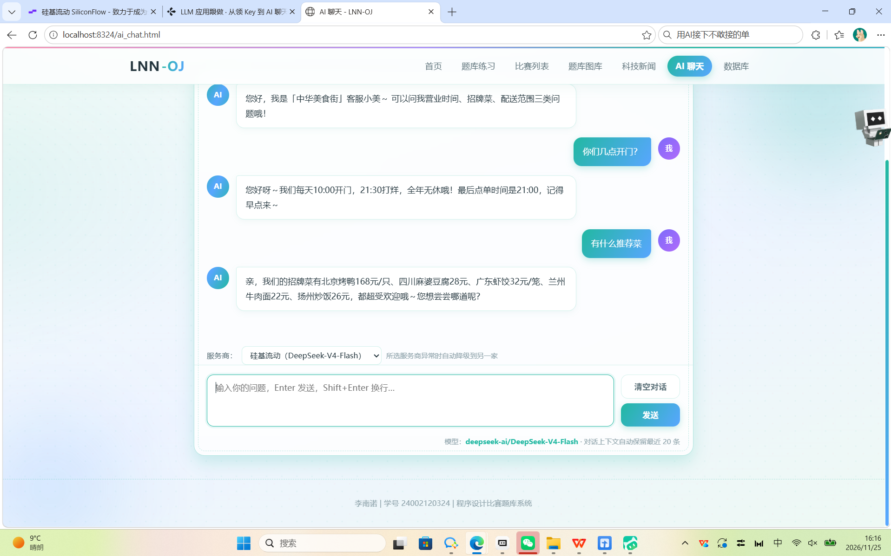
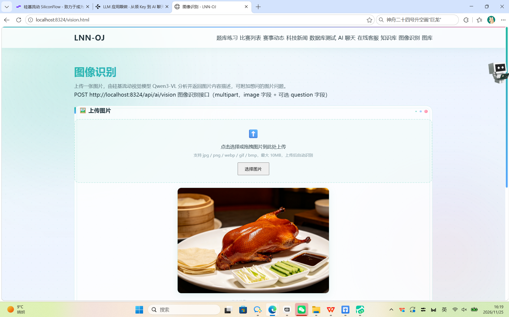
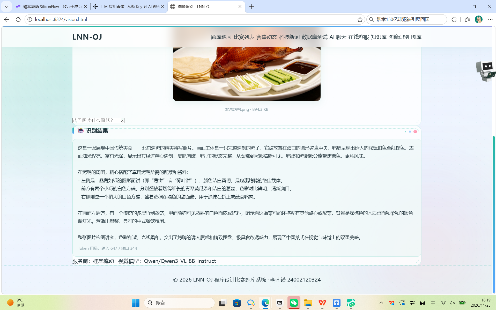
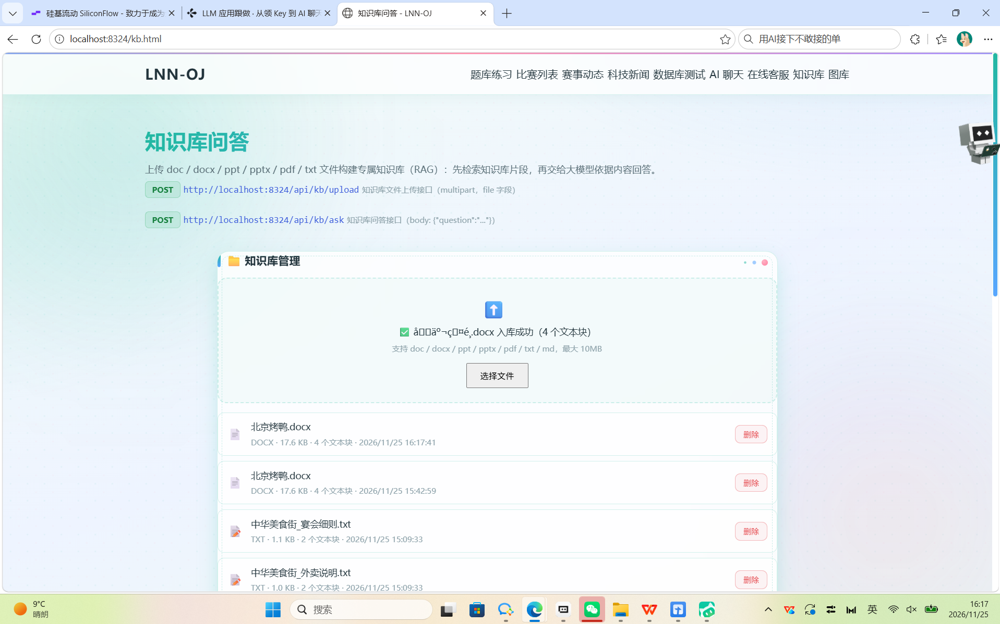
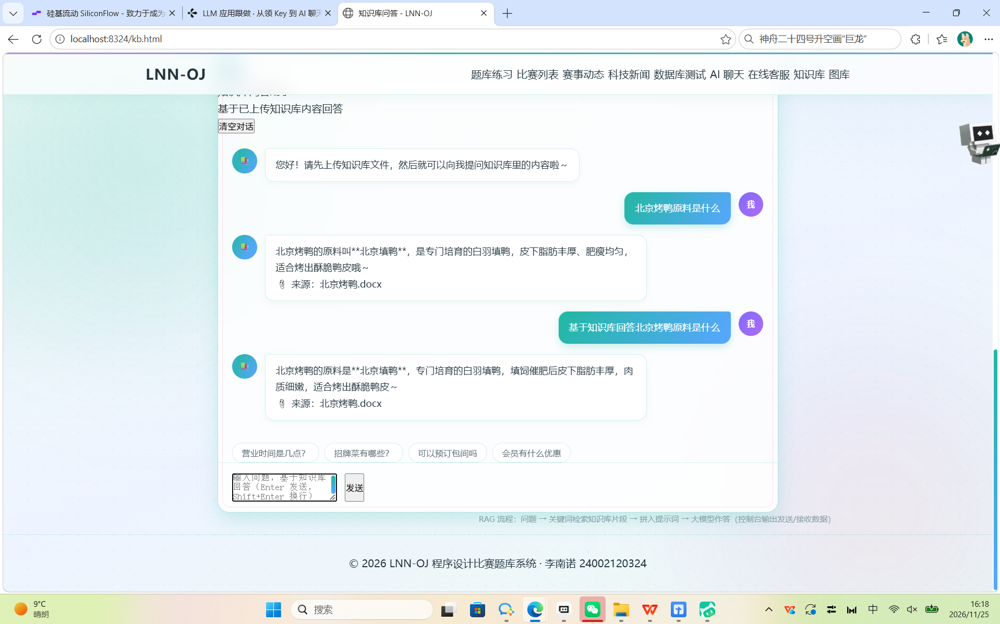
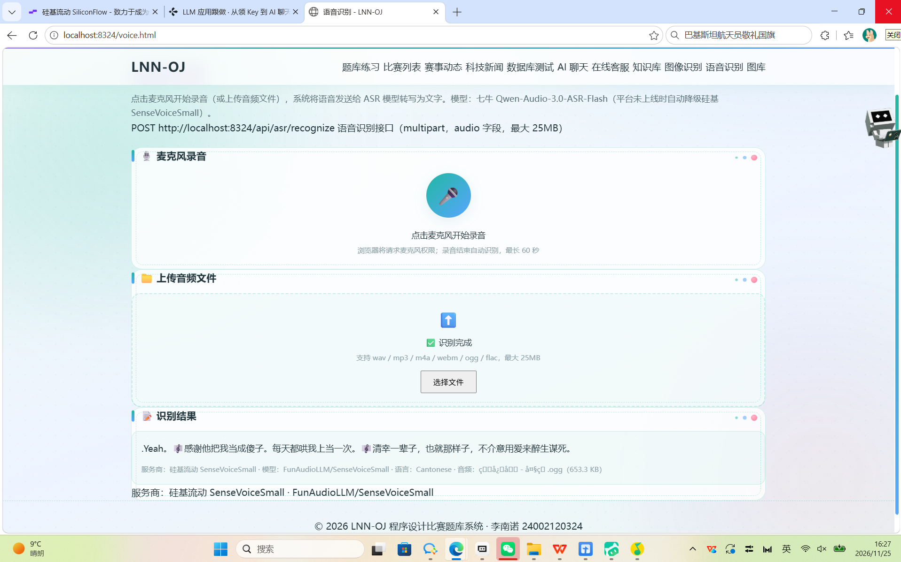

AI 功能测试结果
四大 AI 功能实测截图汇总：客服聊天（DeepSeek-V4-Flash）· 图像识别（Qwen3-VL-8B）· 知识库问答 RAG（文档检索 + 来源标注）· 语音识别（SenseVoiceSmall）。 全部通过 http://localhost:8324 实际运行验证。
💬 客服聊天测试
「中华美食街」客服小美：只回答营业时间、招牌菜、配送范围三类问题。 连续两轮对话验证上下文记忆与服务商切换（硅基流动 DeepSeek-V4-Flash）。


🖼️ 图像识别测试
上传图片由硅基流动视觉模型 Qwen/Qwen3-VL-8B-Instruct 分析并返回内容描述 （POST /api/ai/vision，multipart 上传 + 可选附加提问）。


📚 知识库问答（RAG）测试
上传 doc / docx / ppt / pptx / pdf / txt 构建专属知识库：先检索知识库片段， 再交给大模型依据内容回答（POST /api/kb/upload + POST /api/kb/ask）。


🎤 语音识别测试
麦克风录音（60 秒上限）或上传音频文件，经 ASR 模型转写为文字 （POST /api/asr/recognize，主配七牛 Qwen-Audio-3.0-ASR-Flash，上线前自动降级硅基流动）。

✅ 测试结论：四大 AI 功能（客服聊天 / 图像识别 / 知识库 RAG / 语音识别）全部实测通过，
密钥均在后端 .env 管理，接口统一返回 { code, msg, data } 格式，服务端控制台完整输出发送与接收的大模型数据。